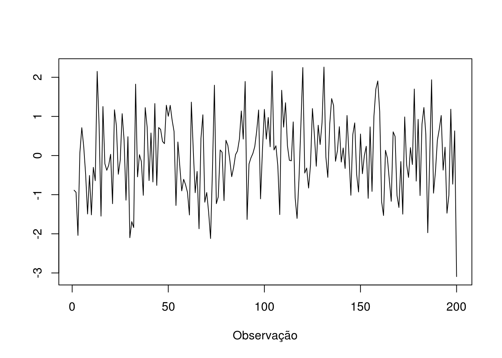

Capítulo 1 Introdução a Séries Temporais
1.1 O que são Séries Temporais
Quando uma variável é medida e registrada sequencialmente em tempo durante ou em um intervalo fixo, chamado de intervalo amostral, os dados resultantes são chamados de série temporal. Observações coletadas em um intervalo amostral no passado recebem o nome de série temporal histórica e são usadas para analisar e entender o passado e para prever o futuro.
Em outras palavras, série temporal é uma sequência de dados em ordem cronológica.
Exemplos:
* Cotação do dólar;
* Taxa de desemprego;
* Receita de vendas;
* Inflação
1.2 Elementos das Séries Temporais
Séries temporais possuem três tipos de padrões, também chamados de componentes:
- Tendência: ocorre quando a variável da série temporal apresenta um aumento ou diminuição a longo prazo;
- Sazonalidade: corresponde a um padrão fixo que se repete no mesmo período de tempo (Ex.: aumento das vendas de roupa de praia no verão);
- Ciclos: ocorre quando os dados mostram subidas e quedas que não possuem um período fixo;
- Erro aleatório: diz respeito aos movimentos irregulares explicados por causas desconhecidas.
Alguns exemplos desses componentes são mostrados abaixo:
# serie sem sazonalidade ou tendencia
plot(rnorm(200, mean = 0, sd = 1), type = "l", xlab = "Observação", ylab = "")
# serie com sazonalidade e sem tendencia
plot(ldeaths)# serie com tendencia e sem sazonalidade
x <- 1:500
set.seed(123)
x <- x/50 + rnorm(500)
plot(x, type = "l")# serie com sazonalidade e tendencia
data("AirPassengers")
plot(AirPassengers)# plotando cada elemento separadamente
plot(decompose(AirPassengers))O pacote forecast traz ótimas funções para analisar os componentes de uma determinada série. Alguns exemplos são:
library(forecast)
ggseasonplot(AirPassengers)ggsubseriesplot(AirPassengers)
Outro importante elemento de uma série temporal é a frequência, que é define o intervalo de tempo que separa uma observação (um dado) de outra: diária, semanal, mensal, trimestral, anual, etc.

1.3 Séries temporais no R
Na verdade, todo o tidyverse é voltado para objetos do tipo data frame, com exceção do purrr, que foca em listas. Grande parte do universo de séries temporais é feita usando objetos do tipo ts. As funções de modelagem dos pacotes forecast e mafs, por exemplo, aceitam como inputs apenas objetos da classe ts.
Portanto, nem sempre o conhecimento em tidyverse resolverá todos os problemas em programação R.
Um objeto do tipo ts pode ser criado da seguinte maneira:
minha.st <- ts(rnorm(200), start = c(1991, 1), frequency = 12)
# o tidyverse não oferece suporte nativo a objetos ts.
# contudo, o pacote forecast consegue facilitar o plot de STs em graficos do ggplot2:
library(forecast)
autoplot(minha.st)1.4 Gráficos interativos com dygraphs
Acha os gráficos do ggplot2 chatos e sem vida? Com o pacote dygraphs é possível criar gráficos com recursos interativos:
library(dygraphs)
dygraph(AirPassengers)Exercícios:
- Instale o pacote BETS
- Carregue os pacotes BETS e forecast
- Use a função BETSsearch() para pesquisar series temporais de um tema de sua preferencia
- Após escolher uma série temporal, baixe-a usando a função BETS.get(). Armazene o resultado na variavel ´ts.exemplo´.
- Analise os componentes de tendencia, sazonalidade e ciclo usando as funcões mostradas (plot, ggseasonplot, ggsubseriesplot, ggmonthplot, etc)
- Repita o procedimento para o pacote gtrendsBR